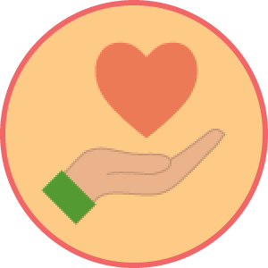
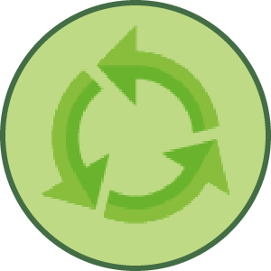
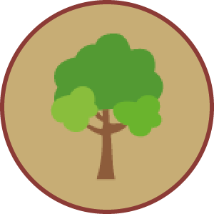
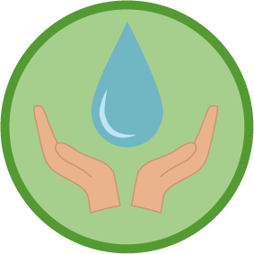
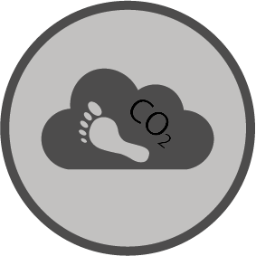
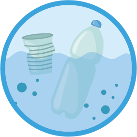
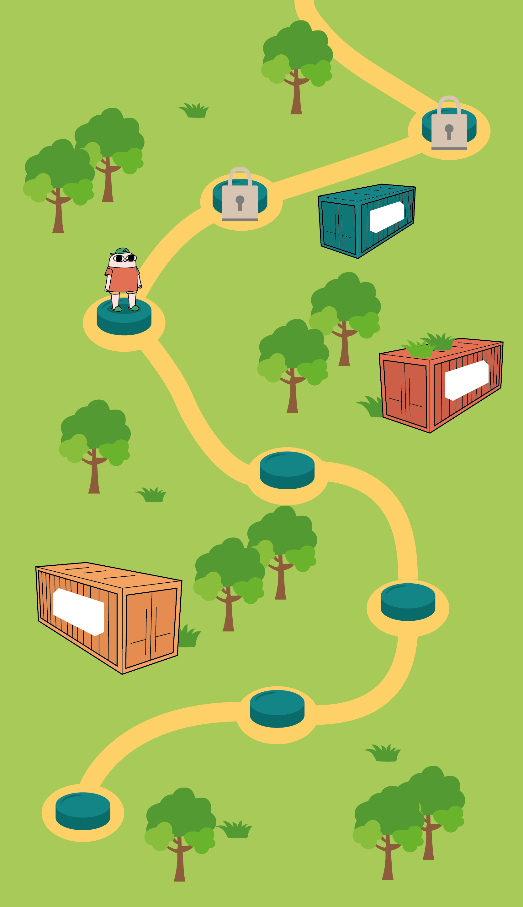

Statistik Genstande doneretx 37 Genstande genbrugtx 22 Træer konserveretx 19 Vand sparetx 79 L CO2-udledning sparetx 8.1 KG Plast fjernet fra havetx 2.9 KG
Milepæle Zone Den Jyske Marsk Mission Konserver 1 liter vand for at komme videre til næste zone. 